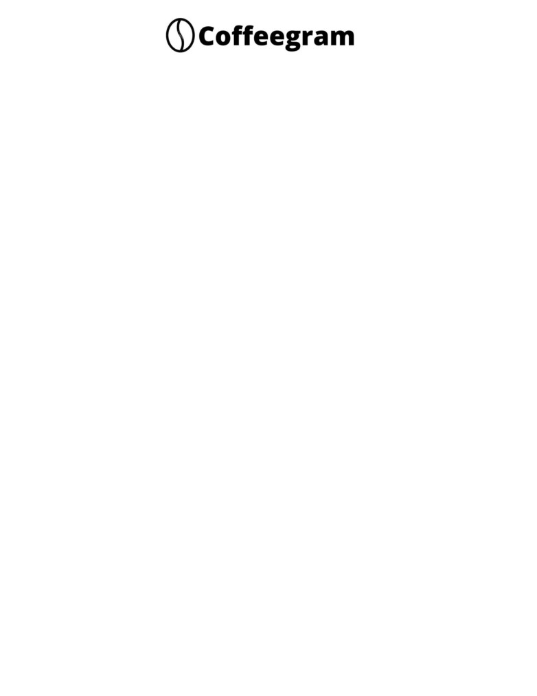

Surat pengalaman kerja
Yang bertanda tangan dibawah ini:
Nama
: Bryan Ardie Budiono
Alamat
: Ruko Grand Niaga Mas B 36 37
Menerangkan dengan sesungguhnya bahwa:
Nama
: Saprizal
Tempat, tgl lahir
: KP Baru, 30 Juni 2000
Alamat
: KP Baru
Terhitung sejak 1 Juni 2021 Sampai 15 Januari 2022 bekerja di Bidang “Waitress” di
Kafe Coffeegram yang bertempat di Ruko Grand Niaga Mas B 36 37
Selama Bekerja yang bersangkutan berkonduit cukup baik
Demikian surat keterangan ini dibuat untuk dapat dipergunakan sebagaimana mestinya
Batam, 17 Januari 2022
Bryan Ardie Budiono